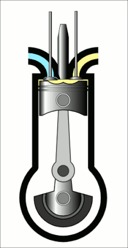

Vznětový motor
Vznětový motor je spalovací motor, u něhož je směs paliva a vzduchu ve válci zapálena samotnou teplotou stlačeného vzduchu. Tím se liší od zážehového motoru, kde je směs zapalována elektrickou jiskrou.
Vznětové motory se nejčastěji používají v dieselových automobilech, námořních a pozemních strojích.
